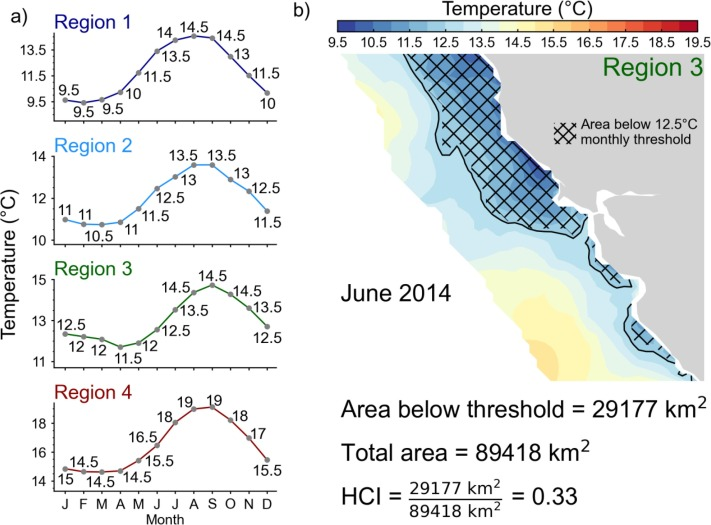

Index Insurance is a promising policy tool to fill this need
Index Insurance in Fisheries
Gaines Lab Meeting
Nathaniel Grimes
Bren School of Environmental Science & Management
Last updated: Nov 06, 2025
Fishers need financial tools to protect income variability
Fishers are risk averse in income (Eggert and Tveteras 2004; Holland 2008; Brick et al. 2012; Bockstael1983?)
- They would prefer more stable income, over flucutations
Current finanicial tools are limited for fishers (Mumford et al. 2009; Sethi 2010; Kaperski2013?)
Call for new financial tools to build more resilient Blue Economies (Sumaila et al. 2021; Watson et al. 2023)
What is Index Insurance?

What is Index Insurance?

What is Index Insurance?

Why Index Insurance?
Avoids quantifying individual loss
- Very difficult to indemnify whether a fisher lost income due to weather or their own luck
Fast payouts and cheap administration
- Money in policyholders accounts in as little as 3 days
Index Insurance immune to “chasing the trigger” moral hazard
Fishers choosing to fish less will not lead to excessive payouts for the insurance company
Fishers cannot control sea surface temperature
Why is there no index insurance market in fisheries?
Basis Risk Definition:
Policyholders not receiving insurance payouts when they suffer a loss
Basis risk lowers demand for products (Clarke 2016)
- Greatest impediment to uptake in agriculture (Binswanger-Mkhize 2012; Jensen2018?)
Indices that are tightly correlated with fish catch are needed
Environmental variables influence catch, but really difficult to measure
- Non-linear, unobservables, management plays a role
Machine learning may be able to tackle the challenges of fishery productivity
ML in Ag IBI
ML in Fisheries
California Market Squid Case Study
“Corn-like” Biological attributes
Short life span (6-9 months)
Clear environmental connections
2nd most valuable fishery in California
Excellent data
Simple management structure
Research Questions
How can we design indices to accurately indemnify fishery losses?
What is a fisher’s marginal willingness to pay for insurance?
Can insurance be offered in a private market?
What environmental variables influence the insurance models the most?
Results
Result 1: Single index models do not sufficiently predict loss. Machine learning models drasticially reduce basis risk
Result 2: Fishers would be willing to pay for all machine learning models
Result 3: A private market could operate as fishers would be willing to pay rates that allow insurnace companies to remain profitable.
Result 4: Environmental variables that are expected to influence squid abundance are the primary contributors to multivariate machine learing models
##{#contributions data-menu-title=“Contributions”}
Contributions
Climate Adaptation
First evaluation of policy relevant tool
Transition to resilient Blue Economy
Inform management on new ways to handle climate shocks
Index Based Insurance literature
New machine learning methods in data limited space
Uncover a unique form of data leakage in insurance pricing
Fisheries Modeling
Demonstrate value of non-linear machine learning
Update information on climate predictions
Outline
1. Define insurance contracts
2. Models
3. Data
4. Results and demonstration of payout schedules
5. Variable Importance
6. Discussion
Index Insurance contracts
What is Basis Risk?
- Fisher catch is a function of weather and other unobserved factors
\[ y=f(B(\tilde{w}))+ \epsilon \qquad(1)\]
\(y\): harvest
\(\tilde{w}\): weather index
\(B(\cdot)\): function mapping weather to fishery productivity
\(\epsilon\): random unobserved factors
\(f(\cdot)\): function mapping productivity to harvest
To create an index, we need a model to estimate \(f(B(\tilde{w}))\)
Basis Risk is the combined model error and unexplained variance
\[ y=g(\tilde{w})+\eta+\epsilon \qquad(2)\]
- \(g(\tilde{w})\): Model
- \(\eta\): Random model error
Goal is to minimize \(\eta + \epsilon\)
More weather variables may reduce \(\epsilon\)
Better models may reduce \(\eta\)
Use our estimator as an index compared to a critical value
- Weather signal \(w\) observed
\[ I(w)=\max(c\mathbb{E}[y]-\hat{y}(w),0) \qquad(3)\]
\(I(w)\): insurance payout
\(c\): coverage level
\(\mathbb{E}[y]\): Long run average catch
\(\hat{y}(w)\): Model prediction
- Insurance company charges a premium, \(\rho\) fishers have to pay
\[ \rho=\mathbb{E}[I(w)]m \qquad(4)\]
\(\mathbb{E}[I(w)]\): Average payout
\(m\): premium loading factor (how much does an insurer charge to make a profit)
Measure utility to see if fishers are better off with insurance
Utility Definition:
Measure of how desirable something is. Includes our perception and tolerance for risk.
People prefer a sure thing over a lottery
Compare the improvement as a percent increase in utility
\[ u_{rr}=\frac{u_i-u_{ni}}{u_{ni}} \]
Calculate how much money insurance earns with a loss ratio
\[ lr=\frac{\sum I(w)}{\sum \rho} \]
Find the “market” price: \(m^*\)
Fishers will be indifferent between insurance and no insurance when \(u_{rr}=0\)
The \(m^*\) that makes \(u_{rr}=0\) is the highest an insurance company could charge and still have fishers buy the contract
\[ u_{ni}(y)=u_{i}(y,I(\omega),\rho)] \]
Reminder: \(\rho=\mathbb{E}[I(w)]m\)
The selected \(m^*\) is the marginal willingness to pay for insurance
High \(m^*\) means fishers really want insurance
\(m^*<1\), insurance has to be subsidized
\(lr<1\), then insurance is profitable for insurance company at \(m^*\)
Visualization of Basis Risk


Data
Environmental Data Sources

Figure 1: Correlation between detrended squid harvest in metric tons and all 12 environmental variables that may serve as a index. Correlations are presented in the box with linear best fit lines added.
Example of spatial coverage


Match fishing blocks with spatial data

Prediction Models
Model Outline
Step 1: Train Model on Data
- Perserve time order and split into training (<2005), validation (2005-2013), and test (>2013) sets.
- Tune hyperparameters on validation setStep 2: Predict payout schedule
- Use model to predict payouts for each year (<2013)Step 3: Find the actuarially fair premium for each of the testing set
- Model updates and retrains each year in the testing set with realization of weather to find new insurance premiums
- Mimics real world insuranceStep 4: Calculate utility in testing sample
Step 5: Find the loading factor that leaves fishers just as well of with insurance
Linear Models are the gold standard in agriculture insurance
- \(\beta_1\) captures the yield/weather dependence
\[ \hat\pi_t=\beta_0+\beta_1\omega_t+\epsilon_t \]
- Use the tuning set to select the best \(\omega\) ,i.e. CUTI, BEUTI, SST, ENSO, or PDO
Random Forests are the most popular in agriculture

Captures non-linear interactions
Robust to overfitting
Very black box
Questions?
References
Binswanger-Mkhize, H.P. (2012) Is there too much hype about index-based agricultural insurance? Journal of Development Studies 48, 187–200.
Brick, K., Visser, M. and Burns, J. (2012) Risk aversion: Experimental evidence from south african fishing communities. American Journal of Agricultural Economics 94, 133–152.
Clarke, D.J. (2016) A theory of rational demand for index insurance. Journal: Microeconomics 8, 283–306.
Eggert, H. and Tveteras, R. (2004) Stochastic production and heterogeneous risk preferences: Commercial fishers’ gear choices. American Journal of Agricultural Economics 86, 199–212.
Holland, D.S. (2008) Are fishermen rational? A fishing expedition. Marine Resource Economics 23, 325–344.
Mumford, J.D., Leach, A.W., Levontin, P. and Kell, L.T. (2009) Insurance mechanisms to mediate economic risks in marine fisheries. ICES Journal of Marine Science 66, 950–959.
Ovando, D., Cunningham, C., Kuriyama, P., Boatright, C. and Hilborn, R. (2022) Improving forecasts of sockeye salmon (oncorhynchus nerka) with parametric and nonparametric models. Canadian Journal of Fisheries and Aquatic Sciences 79, 1198–1210.
Sethi, S.A. (2010) Risk management for fisheries. Fish and Fisheries 11, 341–365.
Sumaila, U.R., Walsh, M., Hoareau, K., et al. (2021) Financing a sustainable ocean economy. Nature Communications 12.
Watson, J.R., Spillman, C.M., Little, L.R., Hobday, A.J. and Levin, P.S. (2023) Enhancing the resilience of blue foods to climate shocks using insurance. ICES Journal of Marine Science 80, 2457–2469.